Page 1
第 1 篇 生命的起源
揭开壁虎抵抗重力的奥秘
科学最为有趣的时候，是当它引起你遐想的时候，尤其是当你的经验常识令你无法相信你眼前所见的时候，更是如此。试想一下，你躺在一家热带旅馆的房间里，一只牙刷般大小的蓝色壁虎，沿着你身边的墙壁爬到天花板上，在你的头顶正上方停下来看着你，不一会又沿着另一面墙匆匆地爬走了。
你刚才所想像的丝毫没有任何异常，壁虎正是以其飞檐走壁的绝技而闻名。但是你有没有想过它是怎样来完成这么精彩的表演的呢？事实上，几十年来研究者们一直对壁虎的附着能力迷惑不解：究竟是什么力量使壁虎克服了重力而不掉到你的鼻子上呢？
最合理的解释是存在吸附力的缘故。蝾螈能够爬墙是因为它们的足能形成吸盘，壁虎也许也是利用这种方法。检测的办法是看它们的足能否在没有空气的真空条件下产生吸附力。试验结果表明蝾螈的足不行，但是壁虎的足可以，这说明壁虎不是依靠吸附作用的。
会不会是摩擦力呢？蟑螂的足上有很多小钩子，就像攀岩者用的鞋钉一样，蟑螂利用这些钩子以此抓住物体表面的凹凸处爬行。而壁虎却可以在摩擦绝对爬不上去的抛光玻璃面上如履平地，所以也不是摩擦力的缘故。
是不是静电引力？烘干机里的衣物粘在一起是因为它们在互相摩擦的时候带上了电荷。可以通过加入一些除静电的东西来消除这种现象，比如说强离子化的不粘层。可是壁虎的足在离子化的空气里也能够附着，那么也可以排除静电引力。
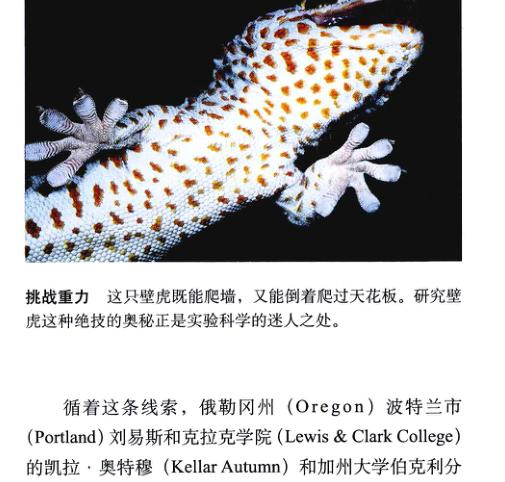
挑战重力 这只壁虎既能爬墙，又能倒着爬过天花板。研究壁虎这种绝技的奥秘正是实验科学的迷人之处。
循着这条线索，俄勒冈州 (Oregon) 波特兰市 (Portland) 刘易斯和克拉克学院 (Lewis & Clark College) 的凯拉·奥特穆 (Kellar Autumn) 和加州大学伯克利分校 (University of California, Berkley) 的罗伯特·福尔 (Robert Full) 对壁虎的足进行了仔细观察。它的足底有一排排细小的绒毛，叫做刚毛，就好像某些时髦牙刷的毛一样。在显微镜下观察时，你会发现每根刚毛的末端分发出 400~1000 个尖锐的突起，叫做匙突 (spatulae)。每只足上有超过 50 万根刚毛，每根刚毛只有头发直径的十分之一粗细。
Autumn 和 Full 组成了一个跨学科的科学家小组，开始着手测量每一根刚毛到底能产生多大的力。为此，他们必须接受两个来自实验的重大挑战：
(1) 单根刚毛的分离 以前还从未有人分离过单根的刚毛，而他们却成功地在显微镜下通过外科手术方法从壁虎的足上拔下一根刚毛，并将其绑在一根微探针上，微探针装在一个可以随意移动刚毛的微控制器上。
(2) 极弱作用力的测量 以前的实验表明，要托起一只壁虎，它每只足的附着力大约是 10 N，也就是能支撑 1kg 左右的质量，每只足上大约有 50 万根刚毛，可以推测出每一根刚毛可以产生约 20 μN 的力，这个力对于测量来说是太小了。为了完成测量，Autumn 和 Full 从斯坦福大学找来了一位机械工程师托马斯·肯尼 (Thomas Kenny)，他是设计测量原子级作用力仪器的专家。
Page 2
实验过程
当研究组分离了单根的刚毛，准备把它放置在肯尼的装置上时，“我们碰到了一个意想不到的难题！”奥特穆说。在随后的两个月里，工作组试图把刚毛粘到传感器的表面，可是它根本就不粘！
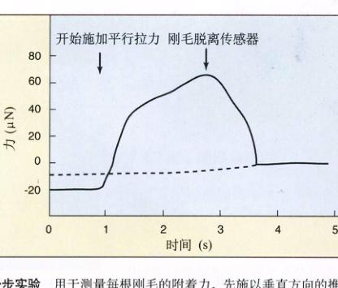
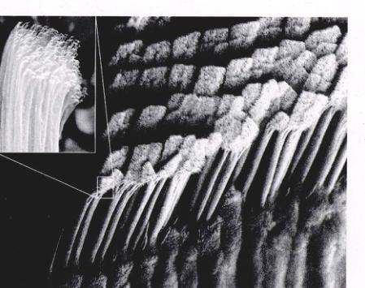
滑步实验 用于测量每根刚毛的附着力。
近观壁虎的足 壁虎足上的刚毛排列成行。
工作组不得不停下来思考，最后他们发现了原因。壁虎爬行时不是像我们走路那样把足踩下去。事实上，当壁虎迈出一步的时候，先是足掌踩到表面上，然后伸展足趾，并在表面上向后滑动，推动刚毛的一侧与表面接触。
他们重新设计了实验，这一次是让刚毛斜着从一侧来接触传感器表面，而不是从正面接触，这使得刚毛顶端的许多匙突得以与接触面充分接触。
实验结果
将刚毛放在合适的位置，实验获得了意想不到的结果。利用仪器所测得的附着力是以前测量结果的 600 倍。每根单独的刚毛所产生的力是 200 μN，远远大于依据整只足所推测的值 (20 μN)。根据多次测量结果，单根刚毛的平均附着力为 194 ± 25 μN。
换个角度思考，如果壁虎的足能粘得那么结实，它又是怎么把它抬起的呢？研究小组用另一种微型仪器对没有附着的单根刚毛进行了研究。该仪器是由同样来自加州大学伯克利分校的工程师罗纳德·费尔林 (Ronald Fearing) 发明的，它能够从各种不同的方向扭曲刚毛。他们发现，如果刚毛超过一个临界角度 (30°)，刚毛和表面之间的力就基本消失了。壁虎移动脚步前，先把足蜷缩，再从表面移开，其中的诀窍就是使刚毛倾斜，作用力消失就像我们撕胶条一样。
壁虎足上的强大附着力来源于什么？实验并没有揭示这吸附力是什么，但看上去似乎涉及原子水平的相互作用。壁虎的足紧贴在墙上，每根刚毛顶端数以百计的匙突必须直接和表面接触，使每个匙突上的每个原子都能参与相互作用。当两个原子靠得很近的时候——接近到比原子直径还小的距离，一种微妙的核引力——范德华力 (Van der Waals force)，就开始起作用了。这种力单独作用时十分微弱，但如果很多叠加在一起的话，合力就很大了。
可不可以设计足上有人工刚毛的机器人，使它们能够爬墙呢？奥特穆和福尔已经着手和相关的机器人自动化公司一起寻找答案了。有时候科学并不仅仅是娱乐，它也会带来巨大的进步。
Page 3
第 1 章 生物科学

图 1.1 贝格尔号的复制品从南美的南海岸离港 1831 年，22 岁的著名英国博物学家查尔斯·达尔文乘 H.M.S. 贝格尔号出发。
你即将开始一次航程——一次探寻生命本质的航程。早在 180 年前，一位年轻的英国博物学家查尔斯·达尔文 (Charles Darwin) 搭乘 H.M.S. 贝格尔号进行了一次类似的航行（图 1.1 展示了贝格尔号的复制品）。这次长达 5 年的航行，直接促使达尔文提出了自然选择进化理论，这个理论已经成为现代生物科学的核心。生物学是研究生物体及其发展进化规律的学科，因此，以达尔文的航行作为我们探索生物学奥秘的起点颇为恰当。不过在开始之前，让我们先用一点时间来想一想生物学是什么，它为什么如此重要。
Page 4
1.1 生物学是生命的科学
1.1.1 生命的属性
按照最广义的概念来说，生物学是研究活着的东西的科学——也就是生命的科学。生命的形态与组成多种多样，生物学家也以各种各样的方法来研究这些生命。他们和大猩猩一起生活，收集化石，倾听鲸鱼的声音；他们分离病毒，种植蘑菇，也研究果蝇的结构；他们从长长的遗传大分子中解读信息，甚至计算蜂鸟的翅膀每秒钟扇动多少下。
是什么东西赋予各种有机体“生命力”？谁都知道一匹飞奔的马是有生命的，而汽车没有，为什么？我们不能说“能动的东西就是有生命的”，因为汽车可以跑，明胶会在碗中摇摆，它们当然都不是有生命的。什么样的特征能够定义生命呢？所有生命体都具有以下 5 个基本属性：
- 有序性 (order)：所有的有机体由一个或多个细胞组成。细胞具有高度有序的结构：原子组成分子，分子构成了细胞内的细胞器。在多细胞生物体内以及生物群体之内，依然存在着更高水平的多层次的有序结构（图 1.2）。
- 应激性 (sensitivity)：所有的生物体都会对刺激产生反应，如植物会朝向有光的方向生长，当你走进黑暗的房间时，你的瞳孔会扩张。
- 生长、发育和繁殖 (growth, development, and reproduction)：所有的生物都具有生长和繁殖的能力，它们具有能够传递给后代的遗传物质，以保证它们的后代和它们是同一个物种。虽然晶体也可以“生长”，但它们的生长与遗传物质无关。
- 调节 (regulation)：所有的生物体都具有协调其内部功能的调节机制，这些功能包括向细胞提供养料，在机体内运输各种物质等。
- 自稳态 (homeostasis)：所有的生物体都有着相对恒定的内环境，而区别于它们所在的外环境，这个过程叫做自稳态。
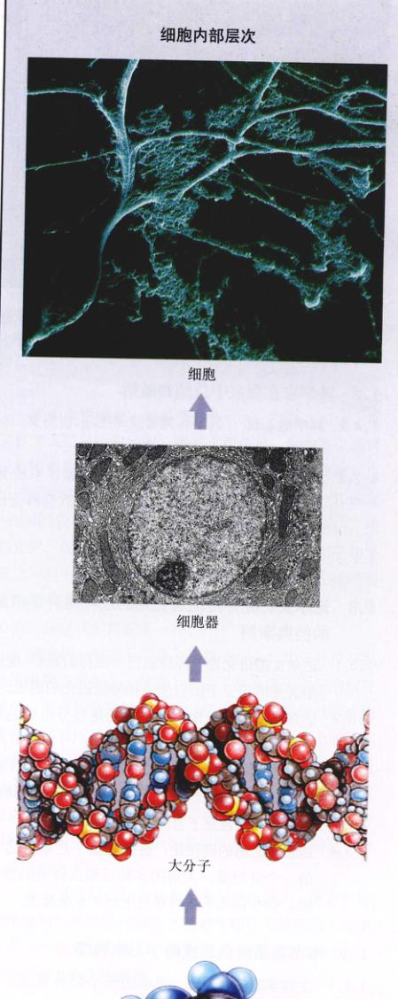
图 1.2 生物体内的多层次有序结构 生命是高度有序的——从小而简单的到大而复杂的，无论是细胞内，多细胞生物个体内容，还是生物群体内都是如此。
Page 5
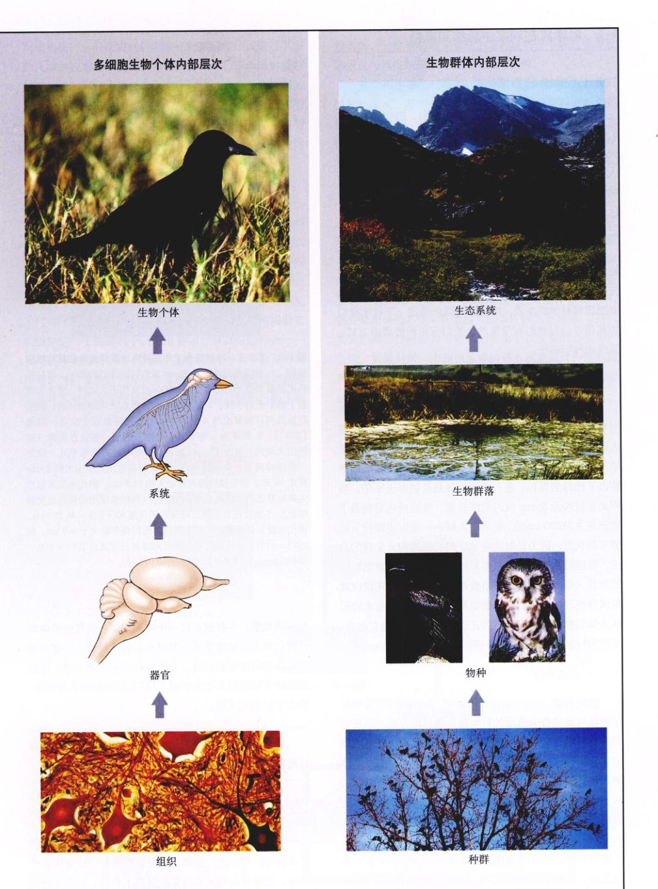
图 1.2 (续) 多细胞生物个体内部层次 / 生物群体内部层次
Page 6
1.2 科学家在观察中总结和概括
1.2.1 科学的本质
生物学是一门既迷人又重要的学科，因为它将对我们的日常生活和未来产生深刻的影响。许多生物学家研究的问题与我们的生活休戚相关，比如快速增长的世界人口以及像癌症和艾滋病 (AIDS) 之类的疾病。这些生物学家积累的知识为我们提供理论基础，让我们有能力以合理的方式利用资源，预防和治疗疾病，提高我们自己以及子孙后代的生活质量。
自然科学的任务，是解释世界是什么样子的，而生物学是最成功的“自然科学”之一。要理解生物学，首先要理解科学的本质。科学家的基本工具是思考，所以要想理解科学的本质，用一点时间来关注一下科学家们如何思考会对我们有所帮助。我们有两种推理的方式：演绎法和归纳法。
1) 演绎推理
演绎推理 (deductive reasoning) 是一种利用普遍法则来推测特定结果的思维方法。2200 多年以前，古希腊人埃拉托色尼 (Eratosthenes)（公元前 3 世纪的希腊天文学家、数学家和地理学家。校者注）用演绎法正确地估算出了地球的周长。在一年里白昼最长的那天正午，当阳光射进埃及 Syene 城内的深井底，埃拉托色尼测量了它正北方向 800 km 处，亚历山大城内一座方尖碑投下的影子的长度。因为已知两座城之间的距离和方尖碑的高度，他运用欧几里何的基本原理就能正确地推算出地球的周长（图 1.3）。像这样用普遍规律来分析特定情况就是演绎推理的例子。这是数学和哲学的推理，用来检验各个知识领域中普遍观点的正确性。普遍法则建立起来，并成为检验各种具体情况的基础。
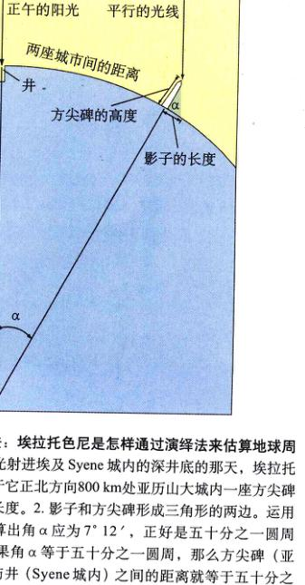
图 1.3 演绎法：埃拉托色尼是怎样通过演绎法来估算地球周长的
2) 归纳推理
归纳推理 (inductive reasoning) 是一种通过观察特定对象来建立普遍适用的科学理论的思维方法。韦氏大辞典将科学定义为“由观察以及旨在推定事物普遍规律的实验所得出的系统化知识”。换句话说，科学家对具体情况进行仔细观察和分析，并从中总结出普遍规律。
科学是一种认识世界的方法，它通过研究客观信息从而建立对世界的认识。
1.2.2 科学研究工作是如何进行的
科学家是怎样确定众多的理论中哪些是对的，哪些是错的呢？通常他们会通过系统化检验各个理论来进行筛选：如果理论被证实与实验观察不相符，就作为错误而被否决。
Page 7
一般而言，科学家在对某科学领域进行了细致入微的观察后会提出假设 (hypothesis)，作为对观察结果的暂时解释。假设是一个有可能为真的命题，那些没有被证实为错误的假设将被保留，因为它们和已知的结果相符。所以可以暂时认为是正确的，但是他们将要不停地接受新知识的检验，一旦与观察不符就会被淘汰或修正。
1) 检验假设
我们可以将这些对假设的检验称为实验 (experiment) (图 1.4)。设想有一间黑漆漆的房间，为了了解它为什么那么暗，你可以提出几种假设，比如“因为没开灯，所以屋子里没有光”，也可能是“因为灯泡坏了，所以屋子里没有光”，甚至还有第三种可能是“我自己什么都看不见了”。要评估这些假设是对是错，你需要用实验来排除它们当中的一个或者几个。例如，你可以试试灯的开关——如果还不亮的话，第一个假设就是错的，那么一定是开关以外的其他原因导致了黑暗。要注意的是，这种检验办法并不能证明任何假设是正确的，它只能指出哪个是错误的。一个成功的实验在于它能证明一个或几个相反的假设与真实结果不符而将它们排除掉。
2) 设计对照
很多时候，我们感兴趣的过程受许多因素或者说变量 (variable) 的影响。要想估计某一变量的影响，就需要固定其他的变量。通常都是设计一组平行的实验来实验：在第一个实验里，利用某种方法来改变该变量以检验某一个假说；在第二个实验，即对照实验 (control) 中，该变量则保持不变，其他的实验条件都完全相同。这样，实验结果的任何差异都可以认为是由于该变量的改变而产生的。实验科学一个相当重要的任务就是设计合适的对照实验，以便于从影响某过程的众多因素中分离出特定的变量。
图 1.4 科学研究是如何完成的 这张图说明了科学研究的过程。首先，科学家进行观察并提出疑问，同时对这些问题提出一些可能的解释（假设）。然后，他们通过实验来排除其中的一个或几个假设。接着，以剩下的假设为基础做出推测，并实施下一步实验来检验这些推测的真伪。经过这一过程，人们可选出最具可能性的假设。
Page 8
3) 运用预测
一个成功的科学假设不仅要有理有据，还要有用——它必须能告诉你一些你想要知道的东西。假设有用之处在于它能够预测，同时预测也为检验假设的真伪提供了方法。如果实验结果与预测的不符，这个假设就必须抛弃；反过来，如果实验结果与预言相符，假设也就得到了支持。
4) 创立学说
在科学界，“学说” (theory) 这个词有两种解释。它可以是对某种自然现象提出的解释，通常以一些基本原则为基础，如牛顿首先提出的“万有引力学说”。这些学说经常是把一些以前看起来毫不相关的概念联系起来，并对不同的现象给出一统一的解释。牛顿的万有引力学说不仅解释了苹果为什么会掉到地上，同时也解释了行星环绕太阳轨道的形状。“学说”也可以是一整套相互关联的概念，经过科学论证和实验检验，解释了某研究领域的客观事实。这些学说为建立知识体系构筑了不可缺少的框架。举个例子，物理中的量子理论综合了一整套有关宇宙本质的观点，解释了有关实验现象，并且为进一步的研究和实验提供了指导。
对科学家来说，学说是科学的坚实基础，是最为肯定的东西。而对于大众来说，学说的含义却恰恰相反——它意味着知识的缺乏和猜测。可以想像，这种理解上的差异会导致混乱。而在本书中，我们将一直用学说的科学含义，即它是已被接受的基本规则或知识体系。
Page 9
1.3 达尔文研究并提出进化论的过程是科学研究的经典案例
1.3.1 达尔文的进化论
达尔文的进化论解释和描述了地球上的生物如何随着时间发生变化，并获得各种各样的新特征。这个著名的理论是一个极好的例子，告诉我们科学家怎样提出假说，科学理论怎样发展并被接受。
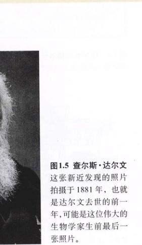
图 1.5 查尔斯·达尔文 这张新近发现的照片拍摄于 1881 年，也就是达尔文去世的前一年，可能是这位伟大的生物学家生前最后一张照片。
查尔斯·罗伯特·达尔文 (Charles Robert Darwin, 1809—1882; 图 1.5) 是一位英国的博物学家，他经过 30 年的观察和研究，终于写出了一部著名的具有空前影响力的著作——《物种起源》。《物种起源》（《自然选择引起的物种起源》或《生存斗争使适威物种保留》）的出版引起轰动，书中阐述的达尔文思想从此主导了人类思想进程。
Page 10
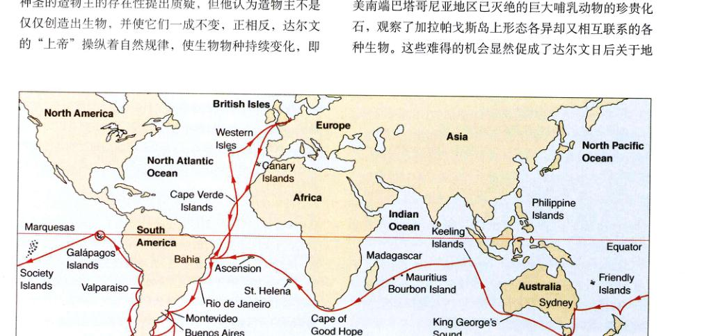
图 1.6 H.M.S. 贝格尔号 5 年的航线 大部分的时间都用于勘测南美洲的海岸线以及周边的岛屿，比如加拉帕戈斯群岛。达尔文对加拉帕戈斯群岛上动物的研究为他日后提出自然选择导致进化的理论奠定了重要基础。
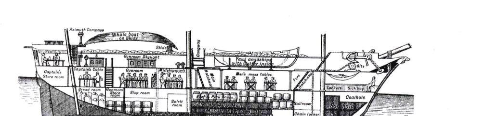
图 1.7 贝格尔号纵剖面图 这艘重 242 吨，长 27.45 m (90 英尺) 的双桅船配备了十门火炮，搭载了 74 名船员！第一次见到这艘船之后，达尔文在给他的同事 Henslow 教授的信中写道：“真渴望拥有更多的空间。”
Page 11
1.3.2 达尔文的证据
在达尔文的时代，有关进化的学说未被接受的最大障碍之一是当时人们普遍相信的一种错误观点——地球只有几千年的历史，达尔文时代陆续发现的一些证据使这种观点越来越站不住脚。达尔文在航行期间仔细阅读了伟大的地质学家查尔斯·莱尔 (Charles Lyell, 1797—1875) 的著作《地质学原理》(Principles of Geology, 1830)，书中第一次简要地描述了远古世界的动植物变迁，在这个世界中，不断地有物种逐渐灭绝，同时又有新物种出现，这就是达尔文想要解释的世界。
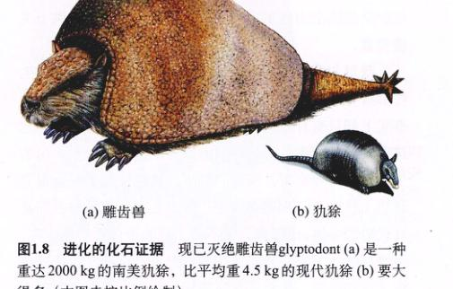
图 1.8 进化的化石证据 现已灭绝的雕齿兽 glyptodont (a) 是一种重达 2000 kg 的南美犰狳，比平均重 4.5 kg 的现代犰狳 (b) 要大得多（本图未按比例绘制）。
Page 12
1.3.3 自然选择学说的创立
观察到进化的存在是一回事，但是确确实实地明白它到底是怎样发生的又是另一回事。达尔文的伟大成就就在于他阐述了那个著名的假说：自然选择导致了进化。
1) 达尔文与马尔萨斯
对达尔文观点的形成至关重要的是他对托马斯·马尔萨斯 (Thomas Malthus) 的《人口论》(Essay on the Principle of Population, 1798) 的研究。在这本书中，马尔萨斯指出植物和动物（包括人类）的数量会呈现几何增长，而人类增加食物供应的能力只能呈算术增长。
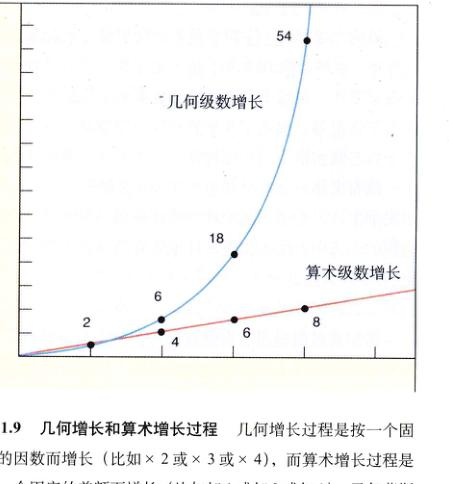
图 1.9 几何增长和算术增长过程 几何增长过程是按一个固定的因数而增长，而算术增长过程是按一个固定的差额而增长。马尔萨斯主张人口的增长曲线是几何增长，而人类的食物生产曲线却是算术增长。你能看出这种区别将要引发的危机吗？
"Can we doubt ... that individuals having any advantage, however slight, over others, would have the best chance of surviving and procreating their kind? On the other hand, we may feel sure that any variation in the least degree injurious would be rigidly destroyed. This preservation of favorable variations, I call Natural Selection."
图 1.10 查尔斯·达尔文《物种起源》摘录 “我们怎能怀疑……那些比其他的个体具有微弱优势的个体，会有更好的生存和繁殖后代的机会？另一方面，我们可以肯定，任何最小程度上的有害变异都会被严格地消灭。我把这种保存有益变异的过程称为自然选择。”
Page 13
2) 自然选择
达尔文对家养动物的变异非常熟悉，他的《物种起源》就以对家鸽饲养的细致入微的讨论作为开场。他懂得饲养者通过选育鸽子或狗等其他动物的某些变异，来产生出某些特征，达尔文把这种过程称为人工选择 (artificial selection)。达尔文同时发现，驯养品种之间这些特意造成的差别，常比那些野生品种间的差别大。这种关系使达尔文想到，进化改变在自然界也会发生。可以肯定，如果鸽子饲养者可以通过“人工选择”培育出某个品种，大自然也一定能够做到相同的事情，在选择下一代的过程中扮演饲养者的角色——这个过程被达尔文称为自然选择 (natural selection)。
3) 达尔文起草著作大纲
达尔文的自然选择导致进化的学说的大纲，在 1842 年就已完成了初稿，但是在把它手稿给他几个要好的科学家朋友看过以后，达尔文却把它收在抽屉里。在此后的 16 年里，他转而研究别的项目。
4) 华莱士持有相同的观点
刺激达尔文最终出版他的理论的是他在 1858 年收到的一篇短文。一位年轻的英国博物学家阿尔弗莱德·罗素·华莱士 (Alfred Russel Wallace, 1823—1913) 从马来西亚把这篇文章寄给达尔文，文章中简要地提出了华莱士自己独创的理论：自然选择导致进化。像达尔文一样，华莱士也受了马尔萨斯 1798 年文章的很大影响。
5) 达尔文理论的发表
达尔文的著作在 1859 年 11 月面世，立刻引起了轰动。人类与猿具有共同祖先的暗示，使许多人感到深深的不安 (图 1.11)。
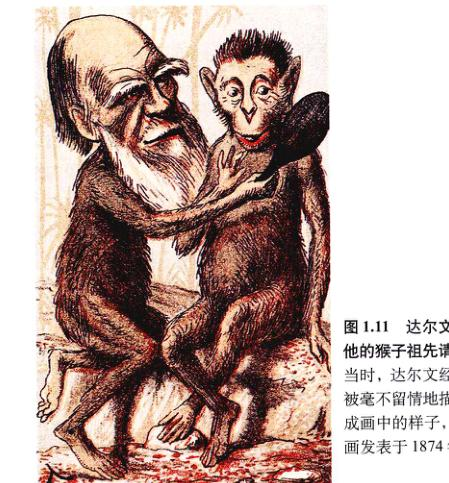
图 1.11 达尔文向他的猴子祖先请安 当时，达尔文经常被毫不留情地描绘成圆滑的样子，此画发表于 1874 年。
Page 14
1.3.4 达尔文之后的进化论：更多证据
从 1882 年达尔文去世至今的一个多世纪的时间里，支持达尔文理论的证据越来越多。同时，我们对于进化原理的理解也有了许多重大的进展。
1) 化石记录
达尔文预言，化石记录中将存在生物大类群之间的过渡类型，比如鱼类与被认为起源于鱼类的两栖类，以及爬行动物与鸟类。我们今天对于化石记录的认识在 19 世纪还是不可想象的，最近发现的显微化石把地球上生命的历史向前推进到 35 亿年前。
2) 地球的年龄
在达尔文的时代，一些物理学家固执地认为地球只有几千年的历史。这使达尔文非常苦恼，因为从某个起始的祖先进化出所有的生物，需要比这长得多的时间。运用研究放射性衰变的速率得来的证据，我们现在知道达尔文时代的物理学家错了，而且是大错特错了：地球大约形成于 45 亿年以前。
3) 遗传机制
在遗传学领域，达尔文受到了最尖锐的批评。在当时，没有人懂得基因或者遗传的原理，所以达尔文自然也不可能完全解释进化发生的原理。
4) 比较解剖学
对动物的比较研究为达尔文的理论提供了强有力的证据。比如，很多不同种类的脊椎动物体内都存在相同的骨头，暗示了它们的进化渊源。图 1.12 中所示的前肢在结构上都呈现相同的骨骼排列方式，这种排列在蝙蝠的翼中以一种方式变化，在海豚的鳍中以另一种方式变化，而在马腿中又是别的方式。这些骨骼在不同的脊椎动物中被称为同源的 (homologous)，也就是说它们有着相同的进化起源，但现在却在结构和功能上表现出差异。与之相对的是同功 (analogous) 结构，比如鸟的翅膀和蝴蝶的翅膀，虽然有着相似的结构和功能，但起源却不相同。
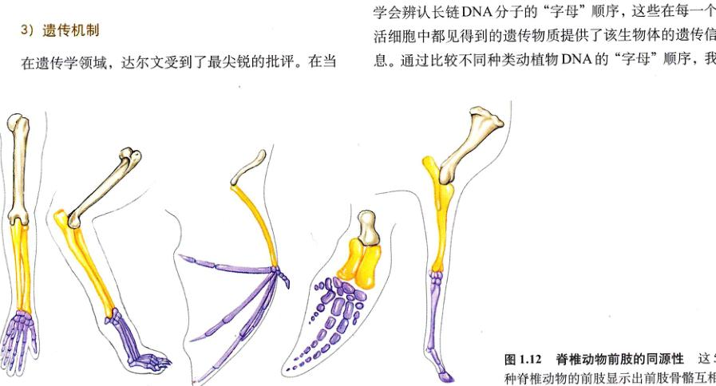
图 1.12 脊椎动物前肢的同源性 这 5 种脊椎动物的前肢显示出前肢骨骼相互关联的部分在不同的动物中如何演化。
Page 15
1.4 本书将帮助你系统地学习生物学
1.4.1 生物学的核心理论
几个世纪以来对生物的观察和研究，产生了一个生物界的组织原则：生物物种的多样性反映了生命史，一部分可以追溯到地球诞生的初期，交织着成功、失败的变迁。对生命多样性的解释，即基于自然选择的进化理论，将成为你学习生物科学的主线，就像共价键理论是学习化学的主线，而量子力学是物理的主线一样，基于自然选择的进化，将贯穿你将要在本书中学到的一切内容。
Page 16
生物与环境之间如何相互作用，从而产生出地球生物所特有的复杂群落。
2) 生物体
本书的后半部分着重研究进化的产物——生物体。估计现存至少有 500 万种不同的植物、动物和微生物，而它们的多样性是令人难以置信的 (图 1.13)。在本书稍后部分，我们会着重讨论脊椎动物（我们也是这个家族的成员）的机体及其功能，这是大部分学生最感兴趣也是最为重要的部分。
随着你学习本书，你对一个层次的了解将会是了解下一个层次的工具。生物学的核心理论，就是生物物种的多样性是漫长的进化过程的结果。
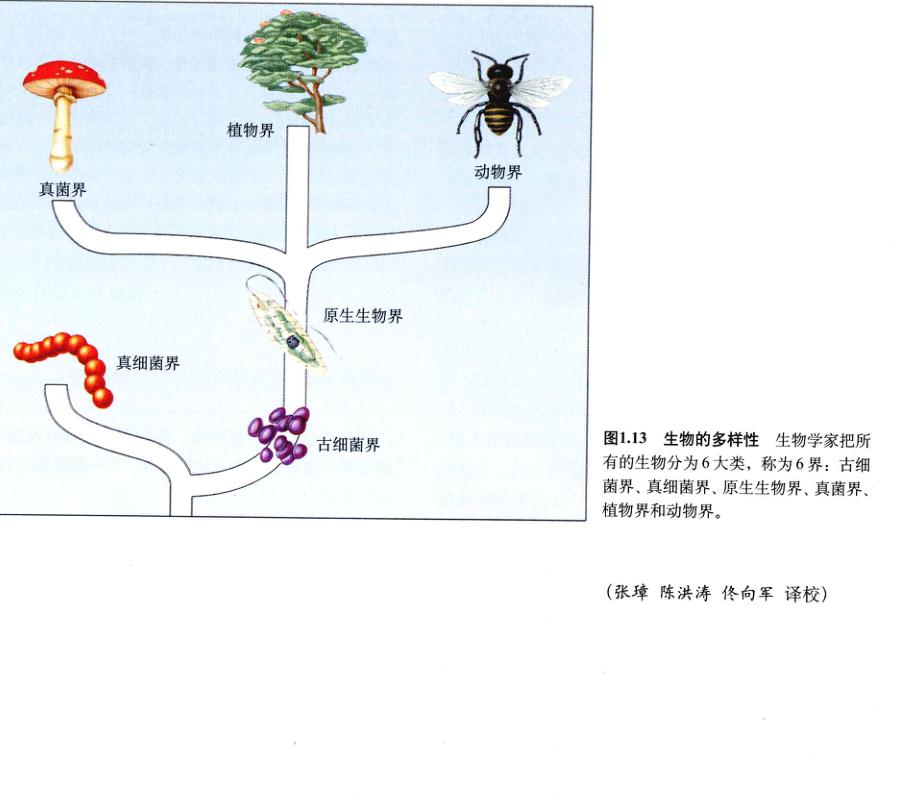
图 1.13 生物的多样性 生物学家把所有的生物分为 6 大类，称为 6 界：古细菌界、真细菌界、原生生物界、真菌界、植物界和动物界。
(张璋 陈洪涛 佟向军 译校)
Page 17
小 结
1.1 生物学是生命的科学
- 不论是单细胞还是多细胞生物，它们都具有高度的有序性，并具有不同的等级层次。
1.2 科学家在观察中总结和概括
- 科学就是从观察和实验中总结出普遍规律的过程。
- 科学通过对照实验从众多的假说中淘汰那些与事实不符的假说，最终选出最具可能性的假说。
- 有一整套证据支持的互相关联的一组假说叫做理论。
|
问 题
- 生物体的基本特征有哪些？
- 演绎推理与归纳推理之间的区别是什么？什么是假说？
- 什么是变量？对照实验怎样检验假说？
- 假说怎样成为理论？理论会因情况下就成为了绝对的真理，而不再具有任何不确定性？
- 基础研究和应用研究之间的区别是什么？
|
媒体资源
- 实践活动：
生物体的组织性
- 科学家视角：
为什么研究古生物学？
科学家如何思考：
生物学中的假说检验
- 技能测验：
科学方法
- 进化导论：
达尔文以前
贝格尔号的旅行
自然选择
|